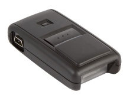

| Image |

All OPN2002 and OPN2003 terminals run an OS (operating system) and an application. Both the OS and the application can be loaded
by a small PC application called APPLOAD.
|
| Software codes |
The OPN200x terminals use an Operating System version that contains an unique 3 letter code.
Before you try to load a new Operating System on an OPN200x terminal you have to know which Operating System file (i.e. RBFVxxxx.S2) must be loaded on your terminal.
In the table below you can find the software codes for the OPN200x terminals.
| Terminal |
Code |
| OPN2002 |
RBG |
| OPN2003 |
RBF |
|
| USB Driver |
To be able to communicate with the OPN200x terminals using USB, you will need to have its USB driver installed on your PC. This driver can be found on our web site on the 'Service and Support' page.
After downloading the USB Drivers installer run the downloaded executable and follow the instuction.
After installing the USB driver, you can connect your OPN2002 or OPN2003 to USB using the mini-USB cable. Windows will then automatically install a virtual COM port on your
PC, which can be selected in various applications, like appload, Hyperterminal and Neto32.
|
| OPN2002 |
To load a new OS or application onto the OPN2002, you'll need a mini-USB cable (which is supplied with the OPN2002) or CRD2000 multi cradle and follow
the instructions below.
| Load OS or application. |
USB Cable |
Connect the OPN2002 to your PC or laptop using the mini-USB cable
Start Appload and select the (Virtual) COM port of your OPN2002 in Appload.
Select the OS or application file in Appload.
|
Multi Cradle |
Loading software on one OPN2002 at a time
- Place one OPN2002 in the cradle.
- Start Appload and select the COM port of the CRD2000 cradle.
- Select the OS or application file in Appload.
- Wait until the downloading has finished before inserting another OPN2002 in the cradle.
Loading software with multiple OPN2002s in the cradle
IMPORTANT: Be aware that the CRD2000 can NOT load software on multiple OPN2002s simultaneously, because only one OPN2002 can communicate to a PC at the same time!
Since all terminals in a CRD2000 cradle will be able to receive the data that Appload is sending to the cradle,
but the OPN2002s can't tell whether they are currently muted or not, the loading of software will go wrong for all OPN2002s
in the CRD2000 cradle besides one. The end result would be OPN2002s with faulty software that will need to be restored by loading
the software again (one at a time). See the trouble shooting section for more information about
loading software on OPN2002s with faulty or crashing software.
However, a new download protocol has been added to the OPN2002 that makes sure that only one OPN2002 will start downloading software
at the same time when using the CRD2000 cradle. This feature has been added in OS version RBGV0207,
so please verify that your OPN2002s have at least this OS version installed.
Also make sure that you are using Appload version 1.39 or higher (with LoadDLL EGF34096 or higher), because the old
versions of Appload didn't support this new protocol yet.
- Read the important note above.
- Place up to 10 OPN2002s in the cradle.
- Start Appload and select the COM port of the CRD2000 cradle.
- Select the OS or application file in Appload.
- To be sure that all OPN2002s have been updated, wait till Appload has finished downloading the software on all OPN2002s.
Note: The OPN2002 that is currently being updated will be recognizable by its orange LED, so never remove this OPN2002
from the cradle during the downloading of the software.
|
Bluetooth |
<Currently not supported>
|
|
| OPN2003 |
To load a new OS or application onto the OPN2003, you'll need a mini-USB cable (which is supplied with the OPN2003) and follow the instructions below
| Load OS or application. |
USB Cable |
Connect the OPN2003 to your PC or laptop using the mini-USB cable.
Start Appload and select the (Virtual) COM port of your OPN2003 in Appload.
Select the OS or application file in Appload.
|
|
| Trouble shooting |
Since the OPN200x doesn't have a display, it also doesn't have a system menu to resort to when you've installed a crashing application that prevents you from
loading new software on the OPN200x.
For this reason the OPN200x has a few escape mechanisms to allow you to restart, halt your application and/or install new software. This can be very useful in case the OPN200x has crashed or is constantly restarting due to
a crashing application.
| Restart mechanisms |
| Automatic |
The OPN200x has a watchdog timer to determine whether the OS is still running or has crashed. This watchdog will cause the OPN200x to restart after about 3 seconds if the OS has crashed.
This watchdog timer will not cause a restart when only the application has crashed.
|
| Manually |
The OPN200x has a manual restart mechanism that allows you to restart in situations that the OS is still running, but your the application has crashed. In order to activate
this mechanism, press and hold the trigger or delete key for at least 20 seconds. After the OPN200x has sounded the restart beep, you can release the key to complete the restart.
|
| Halting your application |
|---|
| Firstly, make sure your battery isn't empty and your mini-USB cable is not connected to the OPN200x. |
| Then restart your application using one of the 2 methods listed above, while keeping the trigger key pressed |
| While keeping the trigger key pressed, insert the mini-USB cable into the OPN200x to halt the application. |
(If successful the LED of your OPN200x should now be blinking orange. You should now be able to load new application or OS software) |
| Halting the Operating System (only necessary in case a corrupt OS is installed) |
|---|
| Firstly, make sure your battery isn't empty and your mini-USB cable is not connected to the OPN200x. |
| Then restart your application using one of the 2 methods listed above, while keeping the delete key pressed |
| While keeping the delete key pressed, insert the mini-USB cable into the OPN200x to halt the Operating system. |
(If successful the LED of your OPN200x should now be blinking red. You should now be able to load a new OS) |
| Restarting an OPN200x with an halted or missing OS or application |
|---|
|
If your OPN200x is blinking red or orange, because either the OS or application has been
halted or simple isn't installed, you can either load new software to exit this state or press and hold both keys for 5 seconds.
|
|